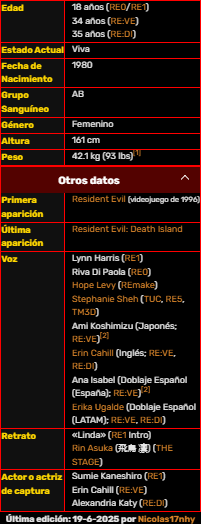

Rebeca ChambersRebeca ChambersRebecca Chambers (レベッカ・チェンバース Rebekka Chembāsu?) es un personaje ficticio de la serie de videojuegos de survival horror Resident Evil desarrollados por Capcom. Era una miembro novato del Equipo Bravo en la unidad S.T.A.R.S., con experiencia en el campo de la bioquímica. Biografia Rebecca Chambers es mayormente recordada por su brillante intelecto y conocimientos en la medicina (bioquímica), así como haber sido capaz de graduarse en la universidad a sus cortos 18 años. Gracias a tan valiosos antecedentes, éstos le valieron para ser aceptada en la unidad especial de la R.P.D., conocida como S.T.A.R.S. siendo integrada a la misma, sirviendo como médico dentro del Equipo Bravo. Se convirtió en el miembro más joven (e inexperto), lo cual podía causarle nervios, pues el resto del equipo eran personas con mucha experiencia. A causa de esto, se muestra impaciente por ganarse su respeto, y acata cualquier tarea que se le asigne sin vacilación. El Incidente del Ecliptic ExpressEl Incidente de la MansiónDespués de separarse de Coen, Chambers llegó a la mansión más tarde esa mañana, solo para no encontrar a nadie allí. Cansada de sus experiencias de la noche anterior, se durmió en una de las habitaciones del dormitorio de servicio. Durante la noche del 24 de julio, tuvo pesadillas recurrentes con respecto a una serpiente gigante y, finalmente, fue despertada por el miembro del equipo de Bravo, Aiken. Los dos buscaron en los terrenos a Marini, de quien confiaron para la seguridad después de que el equipo se separó. Sin embargo, debido a la gran cantidad de Web Spinners, los dos se vieron obligados a abortar la búsqueda de los terrenos y entraron en la mansión, sin saber que su capitán pronto entraría en los túneles oscuros cerca de la guarida de la araña. Al llegar a la mansión y defenderse de algunos monstruos, ella y Aiken comenzaron a darse cuenta de que los eventos en la mansión estaban relacionados con los asesinatos de Arklay que habían estado investigando, por lo que acordaron que primero debían centrarse en la supervivencia. Mientras navegaban por la Mansión, ella y Aiken también presenciaron a Sergei Vladimir y a Ivan llevando una bolsa para cadáveres hacia el bosque, lo que hizo que sospecharan de todo el asunto. Después de ser atacada por una bandada de cuervos, que Aiken ahuyentó con disparos, Chambers se preguntó si ella y Aiken serían los únicos miembros del Equipo Bravo. Sin embargo, su conversación fue de corta duración cuando fueron emboscados por una serpiente gigante. Se vieron obligados a huir, y finalmente lograron evadir temporalmente por los pasillos. Encontraron a la serpiente nuevamente en la biblioteca del ático. Después de una larga batalla, Aiken la empujó fuera del camino cuando la serpiente fue tras ella. Dudó en dispararle a la Serpiente por el riesgo de golpear a Aiken, en lugar de decidir apuntar a la parte inferior del cuerpo. Esto lo irrita lo suficiente como para escupir a Aiken y huir. Aiken le dijo que tuviera esperanza de que alguien los rescataría, pero Chambers estaba luchando con la sensación de que su situación era desesperada. El Equipo Alpha fue enviado a rescatar al equipo Bravo, y Chambers fue encontrado por el miembro del equipo Alpha Chris Redfield, cuyo equipo enfrentó un problema similar al del equipo Bravo. Aiken le daría a Redfield su radio para que pudiera pedir ayuda, sin saber que estaba rota. Finalmente, los dos descubrieron que el líder del equipo Alpha; Albert Wesker, fue el autor intelectual de la muerte de varios S.T.A.R.S. miembros y fue personalmente responsable del asesinato de Enrico Marini. Ella recibió un disparo de él, pero sobrevivió debido a su chaleco antibalas. Después de despertar al monstruoso Tirano (Modelo T-002), Wesker fue rápidamente empalado por sus garras, muriendo temporalmente. Después de escapar, Chris Redfield y Rebecca Chambers, junto con los miembros del equipo Alpha Jill Valentine y Barry Burton, se dirigieron al helipuerto después de que se activara la autodestrucción de la Mansión. La criatura se curaría de sus heridas y atacaría a los sobrevivientes S.T.A.R.S. sin piedad. Afortunadamente, el piloto del equipo Alpha, Brad Vickers, voló y dejó caer un lanzacohetes para usarlo en el monstruo. Después de que la bestia fue erradicada por el misil explosivo, los cuatro escaparon con Brad de regreso a casa. Al regresar a la civilización, Chambers escribió un informe policial que detalla la "muerte" de Billy Coen. Después de eso, ella abandonó Raccoon City antes de su desaparición y fue la única sobreviviente de la S.T.A.R.S. Equipo Bravo después del incidente de la mansión, y uno de los cuatro ex miembros de S.T.A.R.S. miembros aún vivos (los otros son Chris Redfield, Jill Valentine y Barry Burton). Incidente de la Universidad de Rochester y FilosofíaAlgún tiempo después del Incidente de Destrucción de Raccoon City, Chambers continuó con su educación universitaria para lograr un doctorado en el campo de la virología, con la intención de ayudar a sus amigos con más experiencia en combate en una capacidad de apoyo a medida que la Alianza de Evaluación de Seguridad de Bioterrorismo se formó con el tiempo. Cuando una cepa de virus-T se extendió por St. Cloud, Minnesota en 2005, Chambers participó en su defensa. Ella salvó al oficial de policía Tyler Howard durante el incidente, enseñándole a apuntar a la cabeza. Para 2010, la Dra. Chambers como profesora universitaria junto a su trabajo como asesora de BSAA. Este doble papel le permitió el uso de laboratorios universitarios para continuar su trabajo. En ese año recibió órdenes de infiltrarse en la Philosophy University en Philosophy, Australia Occidental como profesora de ciencias, para investigar una serie de casos de personas desaparecidas que la BSAA creía que estaban relacionadas con armas biológicas. La investigación de la Dra. Chambers condujo a su primer sospechoso, el Dr. Liam Howard, un estadounidense que compartió un nombre con un investigador de Umbrella que desapareció en 2003. La investigación fue de corta duración debido a un brote de t-Virus, y el equipo de BSAA en se llamó en espera, que consta de Cpt. Redfield, Piers Nivans y Sophie Home. A medida que avanzaba el día, el alcance total de la investigación del Dr. Howard se hizo evidente. Estaba trabajando en secreto con el canciller universitario para secuestrar a los estudiantes para que fueran alterados genéticamente con genes reguladores de la inteligencia para hacerlos más inteligentes. Mary Gray fue la única candidata exitosa, y las otras se convirtieron en zombis. El Dr. Howard también había participado en un experimento no autorizado en el laboratorio de la universidad, después de haber usado genes tomados de los restos del gigante irlandés del museo con las casas de algún modo resucitando a su hijo, Tyler, a quien creía muerto en Rochester. El brote terminó solo con el uso de explosivos después de que Gray, que se había vuelto mentalmente inestable desde la experimentación con ella, se transformó en un mutante más poderoso. Virus-A y brote de Nueva YorkAlgún tiempo después de los ataques de bioterrorismo de 2013, Chambers había estado investigando la cura de una nueva cepa de virus desarrollada por el bioterrorista Glenn Arias, la investigación se realizó en el Instituto Alexander de Biotecnología en Chicago. Durante la investigación, María Gómez atacó las instalaciones, infectando a todos los empleados, excepto a Chambers, gracias a su vacuna prototipo. Redfield y sus soldados de BSAA llegaron justo a tiempo para salvar a Chambers de los infectados. Tras enterarse de que la misteriosa cepa del virus tenía similitudes con el parásito Las Plagas utilizado por Los Iluminados, Chambers acompañó a Redfield a reunirse con el agente del DSO Leon S. Kennedy, para obtener su ayuda. Nadia y Damian preguntaron por qué Chambers abandonó su carrera de aplicación de la ley para convertirse en científica. Chambers respondió que mientras Redfield lucha contra el bioterrorismo con fuerza, ella lucha contra ellos con su conocimiento. Angustiada por Chris Redfield y Leon S. Kennedy inmediatamente discutiendo a su llegada, Chambers reprendió con enojo a ambos, revelando que el virus que Arias usaba ya estaba dentro de los cuerpos de las personas en todas partes y simplemente necesitaba ser activado por un disparador externo. Dejando atrás una muestra de su sangre vacunada y una computadora portátil llena de datos sobre la producción de vacunas, se fue con disgusto. Fue en este momento que María y Diego Gómez la secuestraron y la llevaron al escondite de Arias en Nueva York. Rebecca Chambers despierta para ser confrontado por Arias que ordenó que la tomaran viva. Mientras los dos hablan, Chambers revela todo lo que ha aprendido sobre el virus-A que impresionó a su captor. Arias luego revela sus motivos para capturar a Chambers, ya que se parecía a la futura novia de Arias, Sarah. Arias intenta poner el anillo de bodas de Sarah en la mano de Chambers, pero su resistencia lo lleva a decidir que pondrá el brazo de Sarah sobre Chambers. Usando la sangre de Chambers, se concibe una cepa más fuerte del virus A con Chambers involuntariamente convirtiéndose en el primer sujeto de prueba. Le dicen que tendrá 20 minutos hasta que la tensión surta efecto y la deje vigilada mientras él se dirige al techo. Después de un encuentro con Redfield luchando contra Diego y un cirujano, salva a Chambers, sin embargo, con el virus A todavía en su sistema. Los dos luego viajan al techo para enfrentar a Arias con el empeoramiento de la condición de Chambers por el segundo. Poco después de la confrontación, Chambers le dice a Redfield que debe matarla ya que el tiempo se acaba, pero Redfield se negó. Chambers mira hacia adelante en la pelea mientras la unidad de Kennedy, Redfield y Redfield, la Silver Dagger lucha contra el híbrido Diego / Arias BOW. Con la batalla ganada gracias a los esfuerzos combinados de todos, Redfield administra la cura a Chambers, salvándole la vida. Los tres reflexionan sobre su supervivencia de otro horror mientras liberan la cura en el aire alrededor de las partes afectadas de Nueva York. Rebecca Chambers recuerda la última vez que ella y Chris Redfield compartieron un paseo en helicóptero juntos y cómo todo se siente muy similar a aquel entonces. Muertes alternativasSi cuando ella pregunta si puede acompañar a Chris y se le responde "No" esta se quedará en la habitación donde se encontró pero cuando regreses a la mansión después de matar a la "Planta 42" al acercarte a la recámara donde estaba por primera vez ella es acechada por un Hunter Alpha y Chris tiene la opción de ayudarla pero si no la ayuda el Hunter la matará de un golpe y esta caerá. Después Chris irá y se hincará frente a su cadáver sintiendo culpa y dolor tras su muerte. Otra versión alternativa ocurre en el segundo piso cuando la encuentras ayudando a Richard. Si no buscas el suero y al volver a la mansión, en el segundo piso, es acechada por un Hunter y aparece la misma opción: ayudarla o ver como el Hunter la asesina. Si para la batalla final Rebecca sigue con vida, ella te ayudará a luchar contra el Tyrant. Sin embargo, si dejas que el Tyrant la agarre y no la ayudas, eventualmente este la apuñalará y morirá casi al final del juego. Volver a RE0 Menu Principal |
{kind=link}